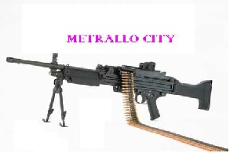
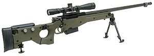

Campero
 De: La Frikipedia, la enciclopedia extremadamente seria.
De: La Frikipedia, la enciclopedia extremadamente seria.
Ej: Melina Magistrelli, Marco Magnani, Manuel Dominguez.. Típicos camperos en la esquina con un RPG
Juegos de interes potencial para camperos
- Counter Strike: este juego es por excelencia uno de los principales productores de camperos del pais, son facilmente reconocibles por llevar un fusil mas grande que el propio personaje( este
pepino arma denominado AWP es de un color verde metalizado) habitualmente se situan mirando hacia las puertas o en su defecto detras de unas cajas o estanterìas. Su capacidad para cabrear a la gente es superior a su capacidad para matar… que ya es decir. Ahí donde hay una partida de Counter Strike, se podrá escuchar a alguien gritar “¡Hijo de puta campero! ¡Suelta la puta AWP!”.
 la awp es algo parecido pero en rifle de francotirador
 típica arma de campero, comúnmente llamada: la puta Awp
- Call of Duty: este divertido juego es junto con el Counter Strike el otro productor de camperos de el país, aqui los jugadores se caracterizan por ponerse
unas braguitas muy sexys unos chalecos antibalas recubiertos de hojas y en muchos casos tirarse al suelo para camuflarse,habitualmente suelen llevar un rifle de francotirador y un llavero de hello kitty
- Team Fortress: otro juego donde aparecen numerosos camperos, aunque en este juego avanzamos en el tiempo hasta que pasamos de llamarlos camperos a snipers, por lo cual el léxico aprendido en el counter o en el Call of Duty es totalmente inútil, ya que nos veremos en la obligación de cambiarlo todo.por suerte son una presa fácil de los espías,ya que al estar quietos para tener mas precisión,el espía puede fácilmente
darle sexo anal apuñalarlo por la espalda.
Ejemplo en el Counter Strike:¡campero de mierda!
Ejemplo en el Team Fortress:¡sniper de mierda!
como podemos observar el cambio de significado es drástico y por lo tanto es posible es posible tener una erección que le explote la cabeza al jugador
- Half Life: este juego es especial, ya que aqui los camperos no te aparecen con rifle de francotirador sino con lanzamisiles ¿por qué? muy fácil, son tan
cabrones listos que prefieren tirarte un misil guiado antes que apuntarte con la ballesta, habitualmente el misil cambiará 6 o 7 veces de objetivo hasta que te alcance, el tanto por ciento de camperos aumenta conforme más raro se su nombre en el juego, por lo tanto si te encuentras a... digamos por ejemplo, alguien que se llame soldado raso y otro que se llame... XxXMEZZOSOPRANO de BATALLAXxX por ejemplo; deberás huir del segundo, mientras que al primera le podrás vacilar y todo
sin duda hay muchos juegos mas donde puedes encontrar camperos, he aquí una pequeña lista con los títulos de algunos juegos, donde puedes encontrar camperos.
Assasins creed, agente corrupto,Kof, sniper elite, aprende a ser diseñadora de moda, flauta guitar hero y muchos más que me da palo poner
Vocabulario
El idioma camper se puede resumir en los siguientes puntos:
- Noob: insulto estándar en la lengua campera, es el modo que tienen de decir que eres malo con ganas
- GG: con esto quieren decir que has jugado bien, es decir que al menos una vez les has matado, es una información todavía no contrastada ya que al único que le dijeron GG está muerto
- Lol: palabra procedente del léxico de los ingleses, quiere decir que les has matado de una forma casi increible, al igual que con GG está información esta sin comprobar
¿qué opinan los jugadores de los camperos?
Obviamente hay muchas opiniones, pero se pueden resumir en tres puntos:
- El 33% de los jugadores opinan que los camperos son guays o en su defecto creen que son buenas, posiblemente todos ellos campeen o hayan campeado al menos 3 veces en las últimas 3 horas
- El 66% de los encuestados opinan que los camperos
son unos maricones de mierda son jugadores que deberían probar otros modos de juego
- El 1 % restante no sabe que es un campero
cuando descubres que tu mejor amigo es un campero sueles poner esta expresión
Sabías qué...?
- Los camperos proceden del planeta Orión
- Los camperos son como las hadas, están ahí pero nunca les ves
- Los camperos no existen, son los padres
- Los camperos no tienen pene
- Los camperos son muy difíciles de ver
- sólo una persona a podido matar a un campero
- esa persona esta muerta
Véase también...
Autor(es):
- Fordus
- Shadowmura
- Generibot
- Daftpunk
- Aitor38
- ElPikideParla
- Marcelo Garay Higinio
- Holahahehqjhsjejshshshs
- Melinacampera2014
Frikipedia 2005-2016, Licencia
GFDL 1.2 - Extraído por FrikiLeaks